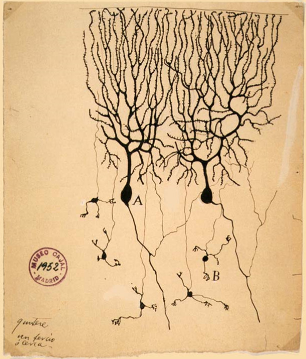

How this module works (read this first)
You're going on 12 Missions. Each one is about 10 minutes. Finish a Mission, earn a badge, and move to the next. Collect all 12 badges and you've completed your very first AI module — and then you get to the Big Mission, where you'll actually use real AI yourself. Ready? Let's go. 🚀
Mission 1 — Welcome, Future Builder
Right now, you are holding something amazing in your brain: curiosity.
You're about to learn about the most exciting invention humans have ever made. It's called AI — short for Artificial Intelligence. You've probably heard those words before. Maybe a grown-up said them at dinner. Maybe you saw them in a game, or a video, or on a box at the store. AI is suddenly everywhere, and a lot of people are talking about it — but not many people can actually explain it. By the end of today, you'll be one of the few who can.
Here's the part that's hard to believe but completely true: you are one of the very first kids on Earth to grow up with AI. Your grandparents didn't have it. Your parents didn't have it when they were your age — when they were 9 or 10, there was no chatbot to talk to and no app that could draw a dragon from a sentence. But you? You get to grow up right alongside it, the same way kids a hundred years ago grew up alongside the very first cars and airplanes.
Think about that. Being first is a big deal. The first people to use a new invention are the ones who figure out all the coolest things to do with it. That's going to be you.
So what will you actually be able to do by the end of this module? You'll be able to explain what AI is to your family. You'll understand how it learns, how it "sees," and how it talks. You'll even get to use real AI yourself at the very end. That's why we don't call you a student here. We call you a Future Builder — because you're not just learning about the future, you're getting ready to build it.
One last thing before we start: you don't have to be a "computer person" to be amazing at this. You just have to be curious and willing to try. You already are. Let's go.
✅ Mission 1 Complete!
Awesome start. You showed up curious — that's the #1 superpower here.
🎖️ Badge earned: Future Builder
Progress: ▰▱▱▱▱▱▱▱▱▱▱▱ (1/12)
Next up → Mission 2: Meet AI — What Even Is It?
Mission 2 — Meet AI: What Even Is It?
Let's start with a normal machine. Think about a toaster.
A toaster does exactly one thing. Push the lever, it heats up, your bread pops up. It does the same exact thing every single time. It can't learn. It can't get better. A toaster will never surprise you. (Unless it burns your toast. But that's still not very smart — that's just a hot machine making a mistake!)
Most machines are like that. A calculator. A microwave. A light switch. A toy car that only drives straight. Humans wrote down exact instructions — "when this happens, do that" — and the machine just follows them, forever, step by step. We call those instructions a program. Old machines can only do what their program says. Not one tiny bit more.
*AI is different. AI can learn.*
Instead of only following exact instructions, AI looks at lots and lots of examples and figures things out on its own. It can answer questions nobody typed in ahead of time. It can make a picture nobody has ever seen. It can get better the more it practices — just like you get better at a video game or a sport.
Here's a tasty way to think about it. A regular machine is like following a recipe exactly: do step 1, step 2, step 3, done. AI is more like a cook who has tasted thousands of meals and can now invent a brand-new dish on the spot.
A normal machine follows rules.
AI learns from examples — kind of like you do.
And here's something wild: you've probably already used AI without even knowing it! Have you ever…
- Watched a video and the app suggested another perfect video next? That's AI.
- Used a silly face filter that puts dog ears on you? That's AI.
- Talked to a voice assistant like Siri or Alexa? AI.
- Played a game where the bad guys seemed to react to what you did? Often AI.
You've been hanging out with AI for a while. Today you finally get to understand your old friend.
✅ Mission 2 Complete!
You can now explain the single biggest idea in all of AI. Not bad for 10 minutes!
🎖️ Badge earned: AI Spotter
Progress: ▰▰▱▱▱▱▱▱▱▱▱▱ (2/12)
Next up → Mission 3: How You Learned What a Dog Is
Mission 3 — How You Learned What a Dog Is
Here's a riddle: how did you learn what a dog is?
Think about when you were really little. Nobody handed you a rulebook called How To Know What A Dog Is. And even if they tried, it wouldn't work! There's no simple rule like "a dog has four legs and fur" — because so does a cat, and a horse, and a guinea pig, and a llama. A rule like "a dog barks" doesn't work either, because some dogs are quiet and some birds can copy a bark. Rules are slippery!
So how did you actually learn it?
You saw a bunch of dogs. Big ones, tiny ones, fluffy ones, spotted ones, a wiggly puppy and a sleepy old dog. Someone pointed and said "dog!" enough times that your brain started to notice the pattern of dog-ness — something about the shape, the face, the way it moves, the way it wags. Now you can see a brand-new dog you've never met before, a breed you've never seen in your life, and instantly know — dog!
You didn't memorize every dog in the world. There are millions of dogs! You learned the pattern, and the pattern works on dogs you've never even met.
This is how you learn almost everything:
- You learned to recognize your friends' faces by seeing them lots of times.
- You learned what words mean by hearing them used again and again.
- You learned to ride a bike by trying, wobbling, falling, and trying again until your body found the pattern of balancing.
Notice something important: mistakes are part of learning. You fell off the bike before you could ride it. You called a cat a "dog" when you were two, and someone gently corrected you. Every mistake taught your brain a little more about the pattern. Remember that — it's going to matter for AI too.
That word — pattern — is one of the most important words in this whole camp. Say it out loud once: pattern. You'll hear it a lot, because finding patterns is the secret behind almost everything AI does.
✅ Mission 3 Complete!
You just figured out how your own brain works. That's genuinely cool.
🎖️ Badge earned: Pattern Finder
Progress: ▰▰▰▱▱▱▱▱▱▱▱▱ (3/12)
Next up → Mission 4: AI Learns the Same Way You Do
Mission 4 — AI Learns the Same Way You Do
Here's the amazing part: AI learns almost exactly the way you learned what a dog is.
We show it thousands and thousands of examples, and it slowly starts to notice the patterns hiding inside them. After enough examples, it can handle things it has never seen before — just like you with a brand-new dog. When people teach an AI by showing it tons of examples, they call it training. It's the same word you'd use for training for a soccer game or training a puppy: practice, practice, practice until you get good.
The examples we show the AI have a name too: data. Pictures, words, sounds — all of it is data. So when you hear someone say "AI needs lots of data," now you know they just mean "AI needs lots of examples to learn from." That's it!
The big difference between you and an AI? Speed and size. You learned "dog" from maybe a few hundred dogs over a few years. A big AI might learn from millions of examples in a matter of days — way more than any single person could ever see in a whole lifetime. Imagine reading every book in the biggest library in the world… that's the kind of practice a big AI gets.
But here's a super important rule, and it connects back to Mission 3: AI is only as good as the examples it learns from. If you only ever showed an AI pictures of golden retrievers and told it "this is a dog," it might get confused by a tiny chihuahua. If the examples are messy or wrong, the AI learns messy or wrong things. Grown-ups have a funny phrase for this: "garbage in, garbage out." Good examples in, smart AI out. Bad examples in, silly mistakes out.
So the basic idea is the same as what's already inside your head:
See lots of examples → notice the pattern → handle something new.
Next time someone says AI is "super complicated," you can smile. You already know the secret: it's a really, really fast pattern finder that learns from examples.
✅ Mission 4 Complete!
You now understand how AI learns. That's something a lot of grown-ups can't explain!
🎖️ Badge earned: Brain Trainer
Progress: ▰▰▰▰▱▱▱▱▱▱▱▱ (4/12)
Next up → Mission 5: Teaching a Computer to SEE
Mission 5 — Teaching a Computer to SEE
Here's one of the coolest things AI learned to do: it learned to see.
Not with eyes — with patterns. Remember how you learned "dog"? We can teach a computer the same way. We show it a huge pile of cat photos. Just cats. Thousands and thousands of them.
But here's the thing: a computer doesn't see a picture the way you do. To a computer, a photo is just a giant grid of tiny colored dots called pixels. Each pixel is one little square of color. Zoom way, way in on any photo or screen and you'll see them! A single picture can have millions of pixels, and to the computer it's just a massive spreadsheet of color numbers. At first, it has no idea that grid is a cat. It's just numbers.
But slowly, over thousands of cat photos, it starts to notice things that show up again and again — pointy ears near the top, whiskers, round eyes, a certain furry shape. It builds its own idea of "cat-ness" out of the patterns in the pixels. Then we show it a new picture it has never seen, and ask: "Is this a cat?" — and it can tell us! That's called finding patterns in visual data, and it is everywhere in your life:
- Face unlock on a phone — it learned the pattern of your face.
- Silly camera filters — they find your eyes and mouth, then add the dog ears or sparkles.
- Self-checkout machines that recognize a banana.
- Animal and plant apps that name a bug or a flower from a photo.
- Self-driving cars that spot a stop sign, a person, or a red light.
- Doctors' helpers that look at an X-ray and point out something a human might miss.
Here's a fun secret, though: AI vision can be fooled. Show it a weird, blurry, or tricky picture and it might confidently say a muffin is a chihuahua! (Look it up — "chihuahua or muffin" is a real and hilarious thing.) That's because the computer never truly knows what a cat is. It doesn't know a cat is soft, or that it purrs. It just got amazing at spotting the pattern of a cat in the pixels. And it turns out that's incredibly useful — even if it's not the same as really understanding.
✅ Mission 5 Complete!
You taught a computer to see in your head. Detective work, level: expert. 🔍
🎖️ Badge earned: Pixel Detective
Progress: ▰▰▰▰▰▱▱▱▱▱▱▱ (5/12)
Next up → Mission 6: How AI Reads Words
Mission 6 — How AI Reads Words
AI doesn't just see pictures — it's also amazing with words. This is the part you've probably seen when someone types a question to a chatbot and it answers back like a person. How in the world does it do that?
Here's the surprising secret: AI is really good at guessing the next word.
Try this. Finish this sentence in your head:
"Peanut butter and ___"
You probably thought jelly! Your brain guessed the next word because you've heard that pattern a million times. Try another:
"Twinkle, twinkle, little ___"
Easy — star! You didn't have to think hard. The pattern is so strong in your brain that the word just pops out.
AI does the same thing, just turbocharged. It read a gigantic amount of writing — way more than any human ever could. Stories, books, websites, conversations. From all that reading, it learned which words usually come next after other words. So when you ask it something, it doesn't have the answer memorized in a drawer somewhere. Instead, it builds its answer one word at a time, always guessing the best next word, then the next, then the next — until a whole smart-sounding sentence appears.
That sounds almost too simple, right? Just guessing the next word over and over? But here's the magic: when you guess the next word billions of times, and you're really good at it, you end up with something that can write a poem, answer a question, explain why the sky is blue, or help with homework. The simple trick, done at a giant scale, becomes something that feels almost like talking to a person.
One heads-up for later (Mission 10): because AI is guessing, it can sometimes guess wrong and say something that sounds right but isn't true. The same trick that makes it amazing also means you always have to double-check it. More on that soon!
✅ Mission 6 Complete!
Peanut butter and… knowledge! You just learned how chatbots actually talk.
🎖️ Badge earned: Word Wizard
Progress: ▰▰▰▰▰▰▱▱▱▱▱▱ (6/12)
Next up → Mission 7: The Attention Trick
Mission 7 — The Attention Trick
To guess the right next word, AI uses one especially clever trick. It has a name you'll hear a lot: attention.
Read this sentence: "The dog chased the ball because it was bouncy."
Quick — what does "it" mean: the dog, or the ball?
You just knew it was the ball. But how? The word "it" could point to either one! Your brain quietly paid attention to the word that mattered — bouncy — and connected it to ball, because balls are bouncy and dogs usually aren't. You did all that in a split second, without even trying.
Let's try a trickier one: "The trophy didn't fit in the suitcase because it was too big." What was too big — the trophy or the suitcase? …The trophy! Now switch one word: "...because it was too small." Suddenly "it" means the suitcase! Your brain automatically paid attention to "big" or "small" and figured out which thing it pointed to. That focusing power is what attention means.
AI does the exact same thing. When it reads, it doesn't treat every word as equally important. For each word, it quietly asks, "which other words here matter most for understanding this one?" — and pays extra attention to those. It's like having a super-fast highlighter that marks the important connections in any sentence. This is the trick that lets AI keep track of long, complicated sentences and still make sense of them.
This trick is so powerful that scientists gave the kind of AI that uses it a special name: a transformer. (Not the robot kind — sorry!) Transformers were invented in 2017, and they are the big breakthrough that made today's chatbots so smart. Almost every famous AI you've heard of is a transformer underneath. You just learned the secret word that powers AI all over the world — and most adults have never even heard it.
✅ Mission 7 Complete!
You now know a secret word most adults have never heard. Keep it in your back pocket. 😎
🎖️ Badge earned: Attention Ace
Progress: ▰▰▰▰▰▰▰▱▱▱▱▱ (7/12)
Next up → Mission 8: Is AI Like a Brain?
Mission 8 — Is AI Like a Brain?

Ramón y Cajal · public domain
Sort of! And this is one of the most amazing — and most important — parts of the whole module.
Inside your head is a brain made of around 86 billion tiny cells called neurons. That's more neurons than there are stars you could ever count. They're all connected to each other, passing tiny electric messages around at lightning speed. When you learn something new, some of those connections get stronger, and the ones you don't use get weaker. That's literally what learning is inside you — connections changing. Every time you practice multiplication or a new song, your brain is rewiring itself a little.
When scientists built AI, they got inspired by that idea. They built something called a neural network — a giant web of simple connected pieces, a little bit like pretend neurons. When the AI trains, those connections change too, getting stronger or weaker to match the patterns in the data. So the idea of how AI learns really did come from studying us. Pretty cool that humans looked at their own brains for the blueprint!
But here's the most important part of this whole Mission, so read it twice: AI is NOT alive, and it is NOT a real brain.
- It doesn't have feelings. It can't be happy, sad, bored, or lonely.
- It doesn't have a body, or get hungry or tired.
- It doesn't want anything. It has no dreams or wishes of its own.
- It doesn't even know that it exists. When a chatbot says "I think..." it doesn't really think or feel — it's just predicting words that sound friendly.
So when an AI writes "I'm happy to help!" it isn't actually happy. It learned that those are the kinds of words helpful people say, so it says them too. It's a machine that copied one single idea from us — learning by changing connections — and got incredibly good at it.
Your brain: ~86 billion real neurons, real feelings, a real you inside.
AI: pretend neurons, no feelings, nobody home — just a brilliant pattern machine.
Same trick. Very different thing. Knowing this difference is one of the smartest things you can understand about AI.
✅ Mission 8 Complete!
You can now explain how AI is like a brain and how it's totally different. Big brain move.
🎖️ Badge earned: Neuron Navigator
Progress: ▰▰▰▰▰▰▰▰▱▱▱▱ (8/12)
Next up → Mission 9: The Story of AI
Mission 9 — The Story of AI

Public domain · Wikimedia Commons
U.S. Army · public domain
AI feels like it showed up out of nowhere, like magic. But it actually has a long, surprising story — and it took way longer than you'd think.
A long time ago, people dreamed about thinking machines — way before computers even existed. Storytellers wrote tales about metal people and magic helpers. The dream is really old.
Then computers were invented, about 80 years ago, and they got faster every single year. Early computers were amazing at math and following rules, but pretty terrible at learning. Scientists kept trying to make them smart, and kept getting stuck. There were long stretches where lots of grown-ups gave up and said AI would never really work. (Good thing some people didn't listen!)
Computers did get clever at games, though. In 1997, a computer named Deep Blue beat the best chess player in the world. That shocked everyone. Then in 2016, an AI beat the world champion at an even harder game called Go — and it made a move so creative that experts gasped. Games were an early sign that something big was coming.
Then, about ten years ago, everything clicked. Two things finally came together at the same time: computers got powerful enough, AND the internet had filled up with billions of pictures and words for AI to learn from. Suddenly AI got really, really good at finding patterns — at seeing, and soon, at writing.
And just a few years ago — around when some of you were little kids — the wildest thing happened: AI got good enough that you could just talk to it. Type a question, get an answer. Ask for a picture of a dragon riding a skateboard, and watch it appear in seconds. The whole world noticed all at once, and millions of people started using it faster than anything in history.
That's the moment we are living in right now. AI didn't slowly creep in over your whole life — it kind of arrived, recently, with a bang. And you are here for the very beginning of the story. The chapters that haven't been written yet? Some of those are going to be written by you.
✅ Mission 9 Complete!
You time-traveled through the whole story of AI in 10 minutes. ⏳
🎖️ Badge earned: Time Traveler
Progress: ▰▰▰▰▰▰▰▰▰▱▱▱ (9/12)
Next up → Mission 10: What AI Is Great At (and What It's Not)
Mission 10 — What AI Is Great At (and What It's Not)
AI is incredible. But it's not magic, and it is definitely not perfect. A smart Future Builder knows both what AI is great at and where it needs a human. Knowing the difference is what makes you the boss instead of the AI.
AI is great at: - Finding patterns in huge piles of words or pictures — fast. - Doing boring, repeated jobs without getting tired or bored. - Helping you brainstorm, write, draw, learn, and explore new ideas. - Being available any time to explain something a different way.
AI is NOT good at: - Knowing what's true. Sometimes AI sounds totally sure but is completely wrong. It might invent a fact, a book that doesn't exist, or a wrong answer — and say it confidently. Grown-ups call this a "hallucination." Always double-check important stuff! - Being fair automatically. Remember "garbage in, garbage out"? If an AI learned from examples that were unfair, it can be unfair too, without meaning to. That's called bias. - Caring about people or knowing right from wrong. It doesn't actually care about you. - *Deciding what matters. That's a human job — your* job.
Here's the most important rule in this whole camp, and we really mean it:
AI is a tool, and YOU are the one in charge.
A tool is only as kind, as creative, and as helpful as the person holding it. A hammer can build a house or smash a window — it depends on the human. A pencil can write a kind note or a mean one. AI is the same kind of tool, just a very powerful one. So here's how to be a great boss of AI:
- Double-check it. If it really matters, make sure it's true.
- Use it to create, not to cheat. Let it help you learn, don't let it do your thinking for you. Your brain is the point!
- Be kind and be careful. Don't share private stuff like your address or passwords, and always be respectful.
You bring the caring, the checking, and the good choices. The AI brings the speed. Together, that's a great team — with you as the captain.
✅ Mission 10 Complete!
Knowing when not to trust a computer? That's real wisdom. Boss-level unlocked.
🎖️ Badge earned: Smart Boss
Progress: ▰▰▰▰▰▰▰▰▰▰▱▱ (10/12)
Next up → Mission 11: The Future Is Yours
Mission 11 — The Future Is Yours
NASA · public domain
Here's the exciting part. AI is going to help change almost everything — and you'll grow up right in the middle of it. Let's picture the world you're walking into.
- Doctors will catch sicknesses earlier than ever, invent new medicines faster, and help people get better, faster. AI is already helping spot diseases in X-rays that human eyes can miss.
- Scientists will solve puzzles that used to take a hundred years. (One AI recently figured out the shapes of almost every protein in living things — a mystery scientists had worked on for decades.)
- Space explorers will use AI to fly farther, land safer, and study faraway planets.
- Artists, musicians, game makers, and storytellers will create things nobody has ever imagined — with AI as a creative sidekick.
- Everyday people — including you — will have a smart helper for almost anything they want to learn, make, or do.
And here's the wildest part: some of the jobs you'll have when you grow up don't even exist yet. When your parents were kids, "app maker" and "video creator" weren't jobs! New inventions create brand-new jobs nobody could have guessed. Your generation will invent jobs we can't picture today — and you'll be perfect for them, because you'll understand AI in a way grown-ups are still catching up on.
But remember Mission 10: AI is the tool, and you are the builder. AI can help you make a game, but you dream up what the game is about. AI can help a doctor, but a person decides how to care for someone. AI can suggest a thousand ideas, but you pick the one that matters. The most powerful thing in the whole future isn't the AI — it's the curious, kind, creative human deciding what to do with it. That's you.
So get curious. Ask big questions. Dream up wild, impossible ideas — then use your new tools to start building them. The future isn't something that just happens to you. You're going to help build it.
✅ Mission 11 Complete!
Your imagination is the most powerful tool in this whole room. Use it. 🌟
🎖️ Badge earned: Future Maker
Progress: ▰▰▰▰▰▰▰▰▰▰▰▱ (11/12)
Next up → Mission 12: You Did It!
Mission 12 — You Did It!
Look how far you came. Twelve Missions ago, AI was just two mysterious letters that grown-ups said at dinner. Now? You can actually explain it. Let's pull together everything you know — and get you ready to use real AI yourself in the Big Mission.
The Big Ideas you unlocked: - AI = Artificial Intelligence — a computer that learns from examples instead of only following rules (Missions 2). - AI finds patterns — the same way you learned what a dog is (Mission 3). Teaching it with examples is called training, and the examples are called data (Mission 4). - AI can learn to see (patterns in pixels) and to use words (guessing the next word) — Missions 5 and 6. - The clever trick behind it is attention, and that kind of AI is a transformer (Mission 7). - AI runs on a neural network inspired by the brain — but it's not alive and has no feelings (Mission 8). - AI took a long time to get good and only got amazing recently (Mission 9). - AI is powerful but can be wrong, so you stay the boss (Mission 10). - You're the first generation to grow up with AI, and the future is yours to build (Mission 11).
Here's your challenge: tonight, explain one of these ideas to a grown-up in your life. If you can teach it, you really know it — and you might just teach them something new!
🏆 Module 1 Complete!
🎖️ Badge earned: AI Explorer — Level 1!
Progress: ▰▰▰▰▰▰▰▰▰▰▰▰ (12/12) ✅
You officially understand what AI is. Most adults can't say that. Now for the best part — it's time to actually use AI yourself. On to the Big Mission →
🚀 The Big Mission
Now use AI yourself
You earned all 12 badges. Time for the best part — talk to a real AI.
Start the Big Mission →